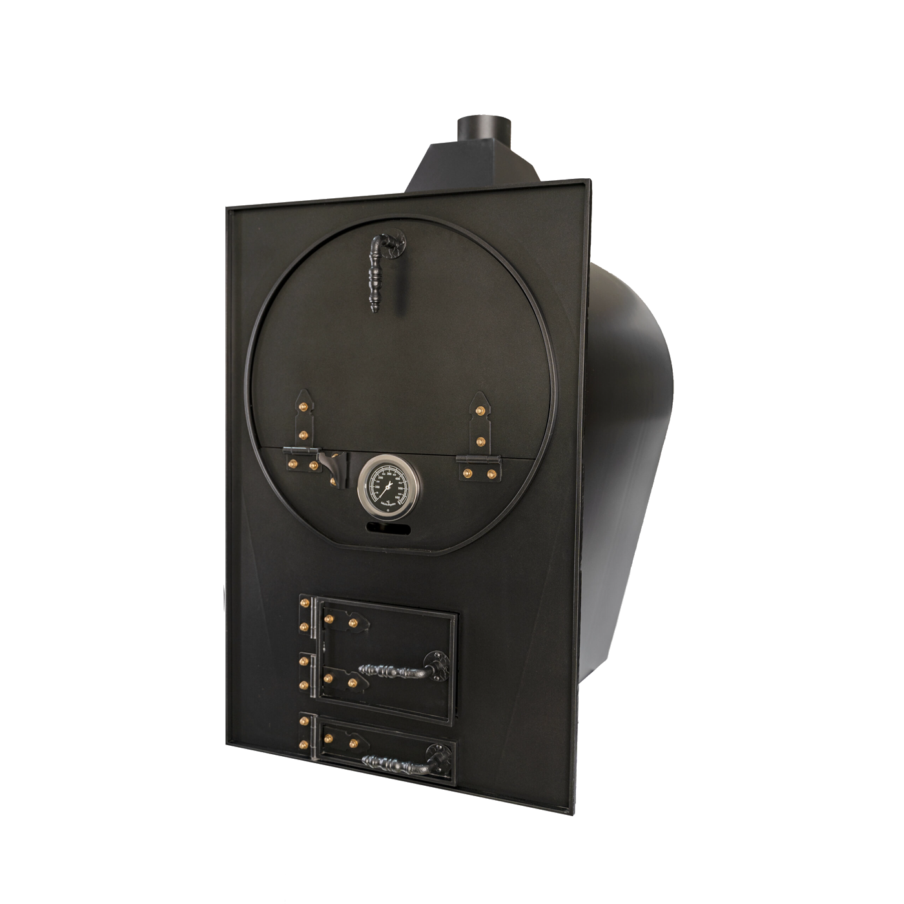
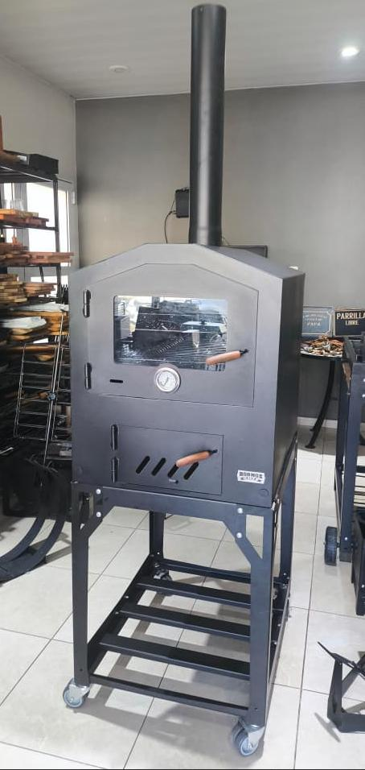
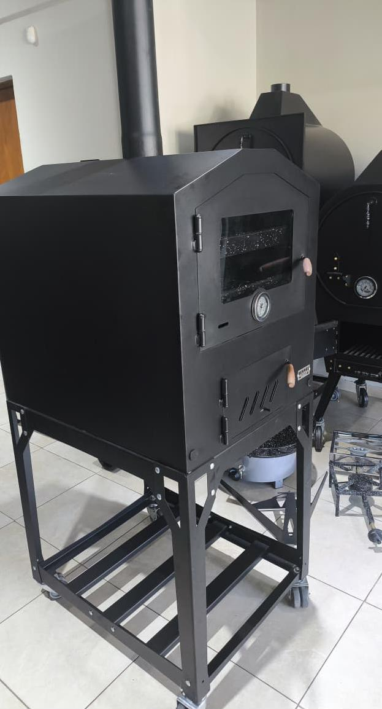
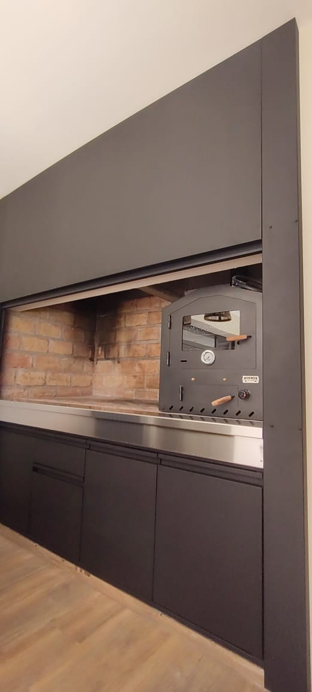
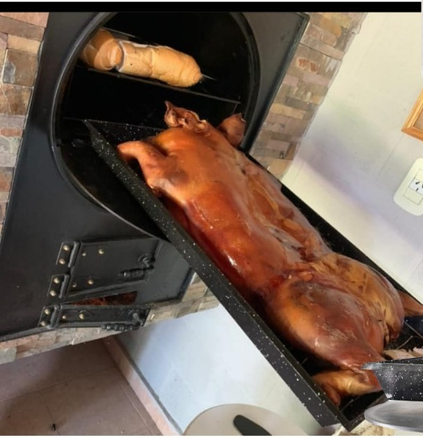
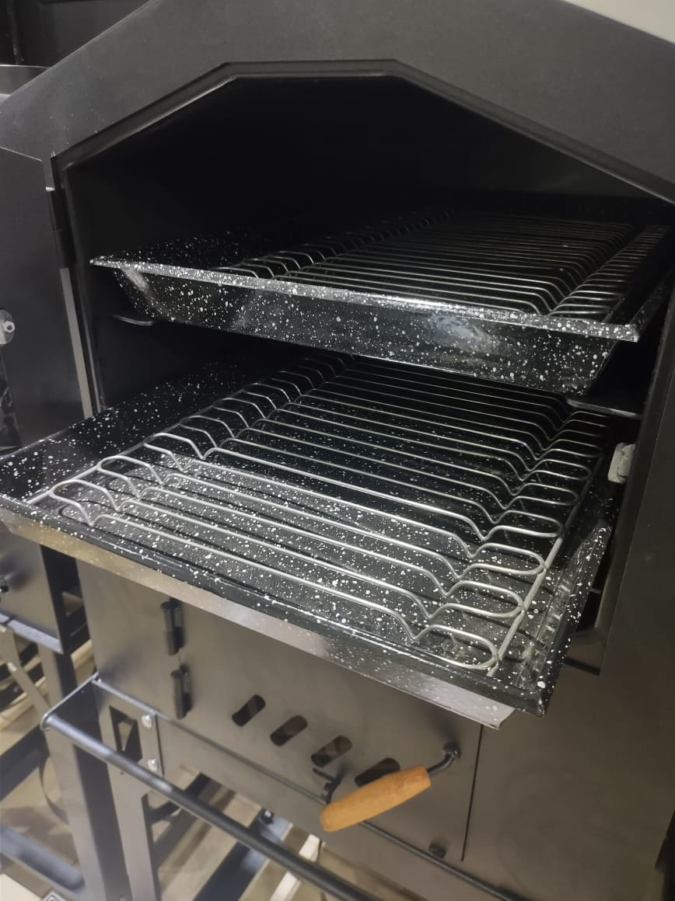
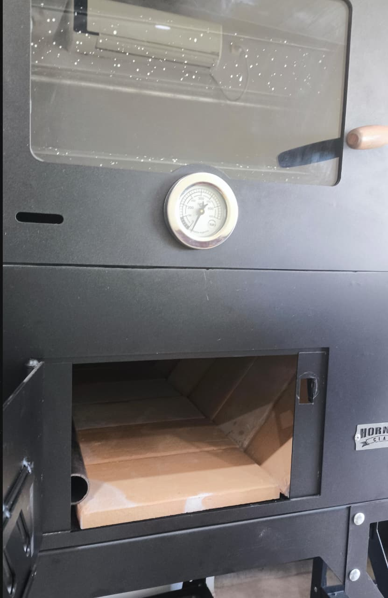
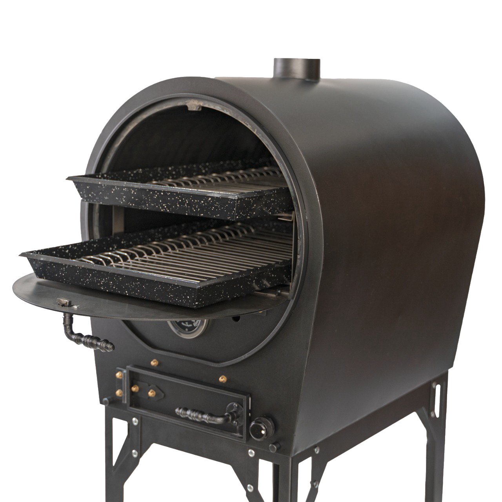
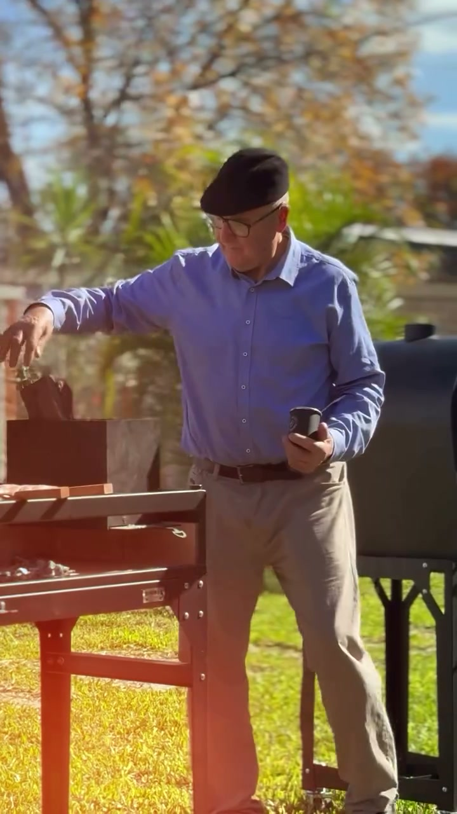

Vos ves una llanta vieja.
Él vio su primer horno.


Lo que vino después no fue fácil.
Hubo que animarse.
Y una familia que lo empujó
a dar el paso.
a dar el paso.
Cuando conocimos a Hornos Cian, nos dimos cuenta de algo.
La mejor historia ya estaba ahí.
No había que inventarla.
Había que hacer que se escuchara.




Mostramos los hornos, sí.
Pero sobre todo, mostramos
a quien estaba detrás.
a quien estaba detrás.
más visualizaciones
más consultas
más ventas

Nosotros no fabricamos ni uno de esos hornos.

Pero ayudamos a que mucha más gente conociera al hombre que los fabrica.
REDES
NO EMPEZAMOS DE CERO.